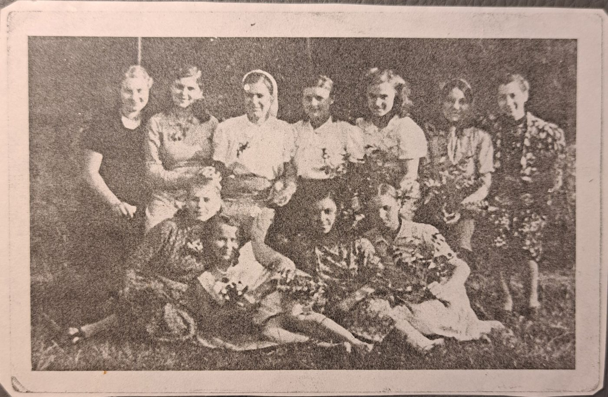
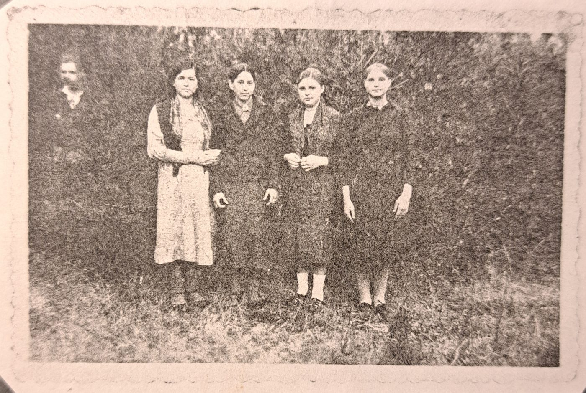
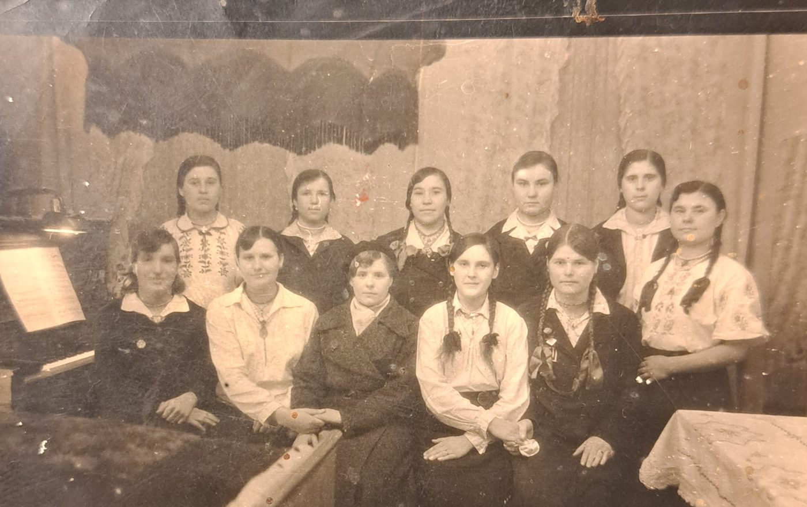
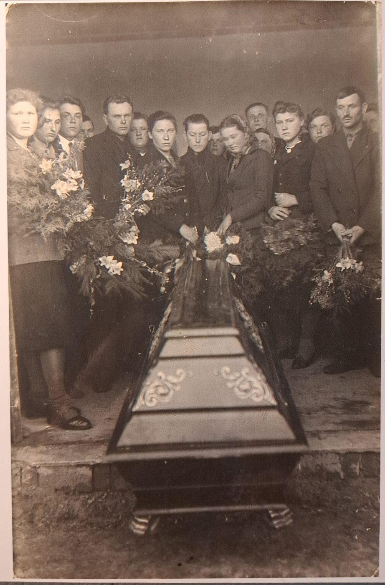
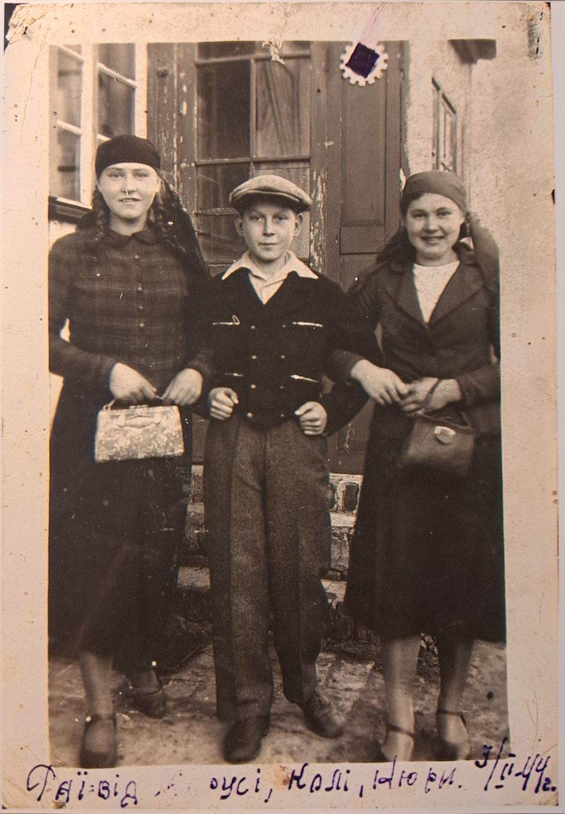
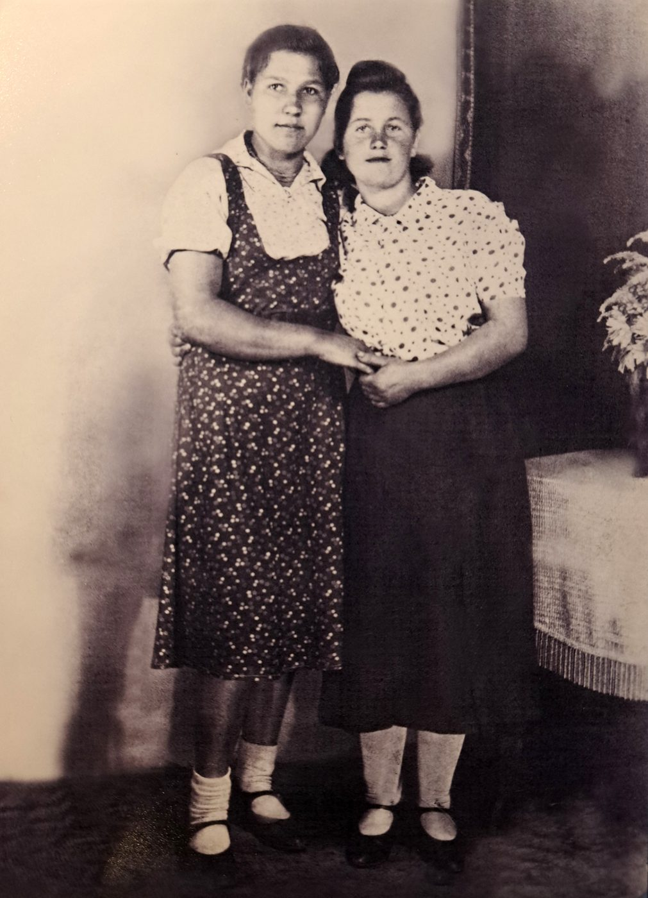

Erinnerungen aus Briefen 2004
2004 schrieb das Geschichtsprojekt der Evangelischen Kirchengemeinde Velten ehemalige Zwangsarbeitende an. Einige antworteten mit Briefen und Fotos. Diese Seite fasst sechs davon in eigenen Worten zusammen und nennt die Schreibenden mit Namen, weil sie als Zeuginnen und Zeugen zur Geschichte Veltens gehören.
Antonina Antonowna Schewtschuk-Danilischina, Ukraine
Die 1927 geborene Frau schrieb 2004, sie habe bei der Fabrik Ikaria an der Berliner Straße gearbeitet und in Holzbaracken gelebt. Nach ihrer Erinnerung lebten im Lager über 1000 Menschen, vor allem aus Belarus und der Ukraine. Eine Kleinbahn habe durch den Wald geführt. Gegenüber habe ein KZ gelegen, mit einem «Krematorium». Ein Krematorium in Velten ist durch keine andere Quelle belegt, die Angabe gilt deshalb als Erinnerung.
Siehe: V03 Ikaria Werke · V15 Werkslager am Stichkanal
Ljubow Grigorjewna Kotowa, Belarus
Die Frau beschrieb am 20.9.2004 ihre Arbeit in der Schleiferei einer Fabrik, die nach ihrer Erinnerung Kanonen herstellte und 0,5 bis 1 Kilometer vom Lager entfernt lag. Im Lager selbst habe es eine «Geheimfabrik» gegeben. Das Lager habe sie nur in Ausnahmefällen verlassen dürfen. Im Dezember 1943 sei sie vom Meister bestraft worden, Bewacher hätten Gefangene misshandelt. Sie zeichnete einen Lagerplan, der hier nicht veröffentlicht ist.
Siehe: V03 Ikaria Werke · V15 Werkslager am Stichkanal
Maria Pantelejmonowna Schkwyrja, Ukraine
Die 1925 geborene Frau aus dem Gebiet Poltawa schrieb, sie sei in einer Holzbaracke untergebracht gewesen. Sie arbeitete zuerst in einem Betrieb, der Einzelteile fertigte, später auf einem Hof und zuletzt in Büros. Sie nennt den 9. Mai als Tag der Befreiung und den 25. Juli als Tag der Heimkehr. Sie schickte dem Projekt drei Fotos, deren Rückseiten sie beschriftet hat.



Siehe: V15 Werkslager am Stichkanal
Maria Akimowna Fedan, Belarus
Die 1923 im Gebiet Brest geborene Frau wurde 1942 mit ihrer Familie verschleppt und auf Bauernhöfe nördlich von Berlin verteilt. Sie arbeitete auf einem Hof bei Velten von 5 bis 21 Uhr, melken und Feldarbeit. Ihre Großmutter starb im April 1944 unbehandelt. Zur Bestattung kamen Zwangsarbeitende aus der Umgebung. Die Befreiung erlebte sie nach eigener Erinnerung durch polnische Einheiten, andere Quellen nennen die Rote Armee am 23.4.1945. Beides ist nicht abgeglichen. Ihre Tochter schrieb für sie und legte drei Fotos bei.



Jaroslav Šimůnek, Tschechien
Der Tscheche musste von 1941 bis 1945 in Velten arbeiten, Transport ab Prag, Unterkunft in Holzbaracken, Arbeit in einer Fabrik für Hüttenerzeugnisse mit Fertigung von Zugbremsen, auch in Nachtschicht. Anfangs konnte er sich frei bewegen, später galt ein Ausgangsverbot. Er kehrte zu Fuß zurück. Der Betrieb ist nicht sicher bestimmt, das Havelschmelzwerk ist eine Möglichkeit (Hypothese).
Siehe: V04 Havelschmelzwerk
Anna Gabzdylová, Polen und Tschechien
Die 1919 geborene Frau aus Polen kam im April 1940 nach Berlin und arbeitete dreieinhalb Jahre als Hausangestellte in einem Veltener Privathaushalt. Sie musste das Abzeichen «P» tragen und erhielt 10 bis 15 Mark Lohn. Ihre Enkelin schrieb 2004 an das Projekt. Der Brief zeigt, dass Zwangsarbeit in Velten auch außerhalb von Lagern stattfand.
Quelle: Briefe und Fotos an das Geschichtsprojekt der Ev. Kirchengemeinde Velten, 2004 (Ordner Geschichtsprojekt 2004), Zusammenfassung der Initiative Eine Kachel fehlt.